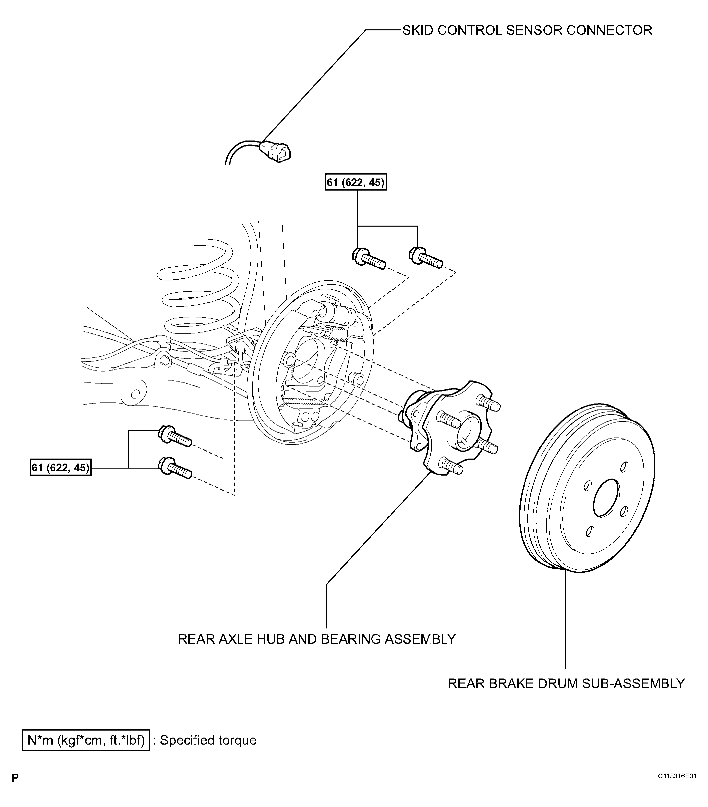

Home
>>
Scion
>>
2006
>>
xB Standard
>>
Repair and Diagnosis
>>
Drivelines & Axles
>>
Wheel Hubs
>>
Axle
>>
Rear Axle Hub
>>
Components
Rear Axle Hub: Components
Fig 1: Identifying Rear Axle Hub Components

Courtesy of © TOYOTA, LICENSE AGREEMENT TMS1002